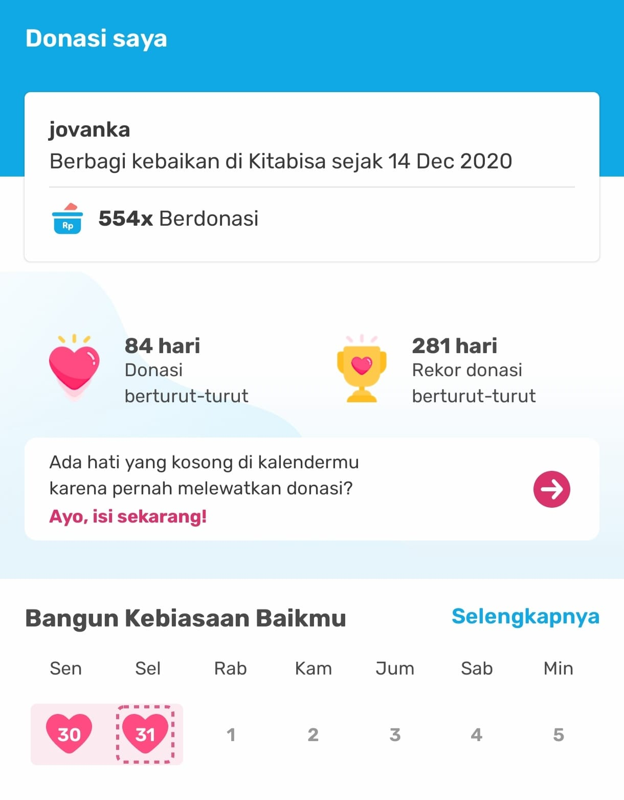

Published December 31, 2024
in this blog, I want to share something unique—something that feels like it aligns with the laws of nature, but it's very real. It’s about the positive impact of regular donations on my personal, professional, and family life.  It all started when I came across a post on my timeline about sedekah subuh (early morning charity) and its positive effects. It inspired me to start making daily donations through the Kitabisa app. Before this, I didn’t donate regularly like this. My approach was more about giving monthly donations right after receiving my salary at the beginning of the month. It was always my top priority, even before budgeting for anything else, including perpuluhan.
Di blog kali ini ada hal unik, bisa di bilang terkait hukum alam tapi ini nyata. Mau sharing soal efek donasi rutin ke kehidupan saya secara pribadi, professional atau keluarga. Jadi dulu itu kayanya sempet liat post di timeline soal sedekah subuh dan efek positifnya, trus akhirnya tergerak juga buat ikutan sedekah rutin setiap hari tapi via app kitabisa, Sebelumnya gak donasi rutin kek gini sih, lebih ke donasi bulanan setiap gajian masuk di awal bulan dan itu masuk ke prioritas pertama selain perpuluhan yang harus dikeluarin sblm ngeluarin yang lain, Puji tuhan sebulan berjalan udah mulai terasa efeknya, jadi lebih digampangin buat ketemu orang orang baik yang bisa influencing diri sendiri untuk jadi pribadi yang lebih baik lagi, Puji tuhan kuliah dan kerjaan jadi lancar banget sampai yang bulanan sudah ga di transfer orang tua lagi, dan yang paling penting keluarga (orang tua & saya ( karna anak tunggal hehe ) ) dirumah sehat semua dan kerjaan jadi lancar juga, Di luar negeri ada prinsip juga namanya 'pay it forward' yaitu gerakan dimana orang orang bayarin orang lain di suatu tempat secara anonim, ya kalo di kita namanya donasi wkwkwk, Yuk temen temen yang ngerasa rejekinya seret, pingin ganti circle yang lebih baik atau sesimpel mau donasi aja bisa pake aplikasi kitabisa buat donasi rutin, bisa di set juga mau donasi berapa rupiah perhari, tapi kayanya start from 1000 - 3000 per hari di kitabisa, kan enak nih bangun bangun ada notif donasi rutin sukses di hape kita, Ini bukan pamer ya, niat saya pingin influencing good habit, so let's start the good habbit this year guys! 💪